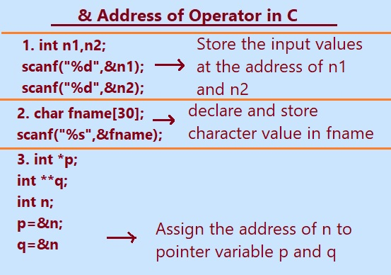

Address operator &: This address is represented by the "&" operator. This is called the ampersand symbol. & operator is also used as unary operator. The & address operator or pointer is used to retrieve the memory address of a variable in computer’s memory. Once you define a pointer variable, you must initialize the pointer with a valid memory address. The ampersand (&) operator is used to get the memory address of the variable.
When we use the ampersand (&) sign before the variable name and it gives the address of the variable. The address operator is used in C to give the memory address of a variable. Addresses of a variable returned by the address operator(&) are called pointers because it points to a memory location.
This operator returns an integer value that is the address of its operand in memory. We can use the address operator (&) with any type of variables, arrays, strings, functions and even pointers.
The & Operator can be useful in situations where we need to pass the memory address of a variable to a function, or when we want to manipulate the variable directly in memory.
Using the & address operator, programmer can modify and access the value of a variable at its memory location, providing greater flexibility and control in your programming tasks.
& Address of operator in C programming.
Why Address Operator used in C?
The address operator is a unary operator that can be used to get the memory address of any variable in your C program. The & operator itself must precede the variable name, without any intervening spaces.
We can use the & address operator to pass the address of a variable as an argument to a function call or to assign the address of a variable to a pointer variable. You can pass addresses to C programs and operate on them like any standard C pointer.

How does Address Operator work in C?
In C programming, the address operator, represented by the "&" sign, works by returning the memory address of a variable. When you use the address operator with a variable, it retrieves the location in memory where that variable is stored. This memory address is a unique identifier for the variable's location in the computer's memory.
& in scanf():
By using the `&` address of operator in `scanf`, you are essentially passing a pointer to the variable's memory location where the input value should be stored, enabling `scanf` to update the variable's value directly in memory.
Syntax:
//stores the value of the variable
scanf("%d",&variable_name);
Input or store values using & address of operator in scanf().
Example 1. C program for Scanning user integer input with the ampersand and display the input.
//include is used to add basic C libraries
#include<stdio.h>
int main()
{
//declaring variables
int n1, n2;
//Asking user to enter integer input
printf("Please enter first integer number \n");
scanf(“%d”,&n1);
printf("Please enter second integer number \n");
scanf("%d”,&n2);
//displaying output
printf("\n The Numbers are : %d and %d ", n1, n2);
return 0;
}
Output:
Please enter first integer number
5
Please enter second integer number
10
The Numbers are : 5 and 10
Example 2. C program for Scanning user String input with ampersand & and display
#include <stdio.h>
int main()
{
char fname[30],lname[20];
//Ask user to input first name
printf("Please enter your first name = ");
//Store the fname in variable fname
scanf("%s",&fname);
//Ask user to input last name
printf("Please enter your last name = ");
//Store the fname in variable lname
scanf("%s",&lname);
//displaying output
printf("Your name is %s %s ", fname,lname);
return 0;
}
Output:
Please enter your first name =Ajay
Please enter your last name =Devgan
Your name is Ajay Devgan
Example #3 Address of operator(&) and dereference operator (*) in C
#include <stdio.h>
int main(void)
{
//declaring variables
int *p;
int **q;
int n;
//Asking user to enter input
printf("Please enter a number = ");
//Store the number at variable n(at the address of n)
scanf("%d",&n);
//take the address of the n into the p single pointer
p=&n;
//take the address of the n into the q double pointer, it will give the address of the address
q=&n;
//displaying output to the screen to end user
//address output may vary from compiler to compiler
printf("Value of n is =%d \n",n);
printf("Address of *p is %x\n", &p);
printf("Address of **q is %x", &q);
return 0;
}
Output:
Please enter a number =5
Value of n is =5
Address of *p is=5000
Address of **q is=5004
Note: Address may vary from system to system.
Previous Topic:-->> Application or use Pointers in C. || Next topic:-->>Complex Pointer in C.
Other Topics:
Variables and Identifiers
Relational Operators
if-else statements
Switch case
While Loop
Infinite while Loops
C FOR Loop
Infinite for Loops
Continue in Loops
One Dimensional Array
Two Dimensional Arrays
Read and Display 2D Arrays
Types of functions
Passing Array To Functions
Nesting of Function
Array vs Structure
Array of Structure
Structures and Functions
Structures Within Structures
Use Of Pointers In C
File Handling In C
Loops FAQ
Arrays FAQ
count vowels in a file
Function FAQ
Conditional Statements Assignments
For Loops Assignments
Arrays Assignments
Function Assignments
Structure Assignments
Pointers Assignments
Files Assignments
Storage classes Assignments
Binary Files
count words,lines in a file
Copy files
Update File
Continue in Loops
break in Loops
Difference Between While and Do while
difference while do..while & for
malloc
calloc
Storage Classes
Operators MCQ
Conditional Statements MCQ
Loops MCQ
Arrays MCQ
Function MCQ
Structure MCQ
Pointers MCQ
Files MCQ
Storage classes MCQ